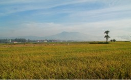
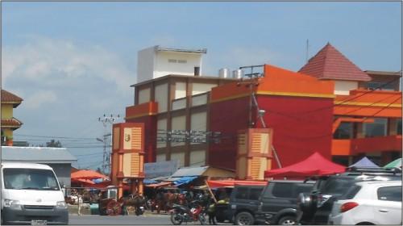
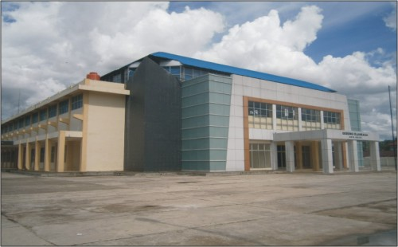
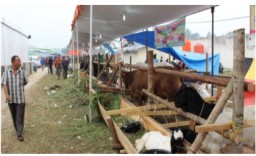
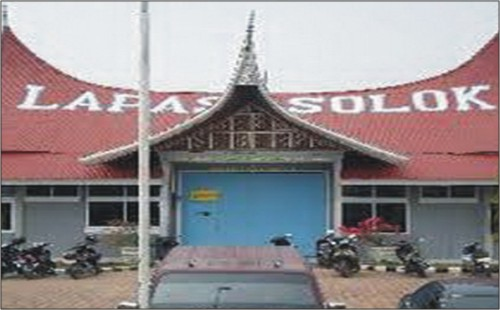

Pusat pemerintahan yang berdiri kokoh di jalan lintas sinapa piliang Pusat pemerintahan yang berdiri kokoh di jalan lintas sinapa piliang
 |

Bersama Membangun Kota Solok Nan Indah,Semoga Dengan Adanya WEB Resmi Ini Kita Bisa Lebih Tahu Potensi Apasaja Yang Ada Di Kota Solok Ini,

Semakin Berkembang pesatnya tata ruang kota sebagai bukti semakin berkembangnya perekonomian masyarakat kota solok karna bisa dilihat dari aktifitas pasarnya

Gedung OlahRaga Yang Baru Selesai Pembangunannya diharapkan bisa mengangkat minat para pemuda kota solok untuk berolahraga,dan juga agar bisa berprestasi di kancah nasional demi mengangkat nama kota solok
|
 Mesjid Al-Muhsinin yang berdiri kokoh ini,melambangkan betapa kuatnya unsur islam di kota solok Mesjid Al-Muhsinin yang berdiri kokoh ini,melambangkan betapa kuatnya unsur islam di kota solok

|
Bareh Solok Bareh Tanamo,itulah semboyan untuk keenakan beras yang tumbuh di tanah solok,beras solok adalah salah satu komoditi yang utama bagi kota solok |
Kubung 13 adalah bangunan serba guna yang berada di perbatasan kota solok dengan koto baru
|

Ternak Sapi Dikota Solok Memilik Keuntungan yang sangat menggiaurkan
|
Logo Kota Solok Memiliki Seribu Arti Dan Makna
|

Lembaga Pemasyarakatan Kota Solok yang Berdiri Di kelurahan Laing
|
|
|